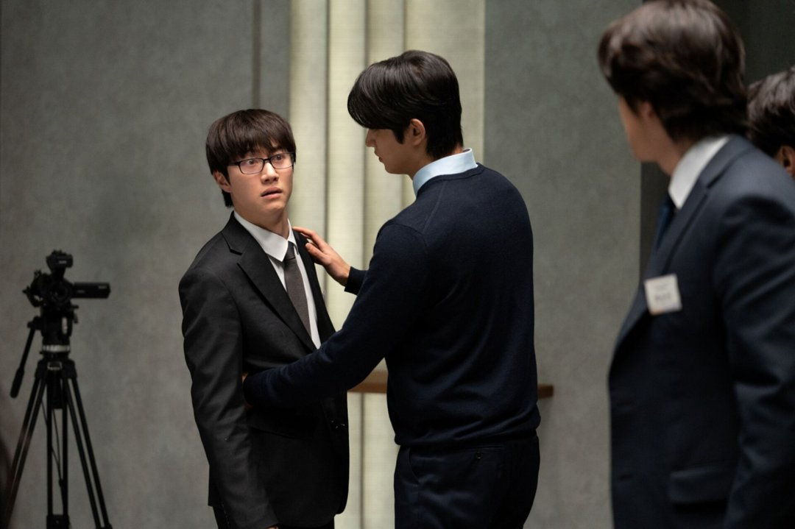
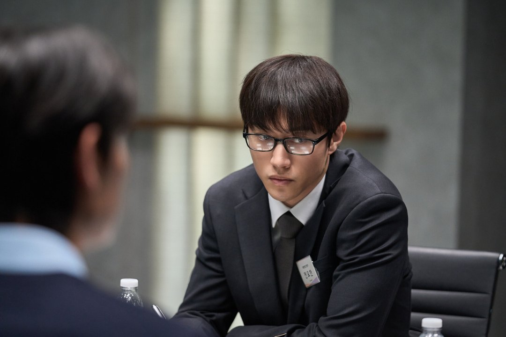
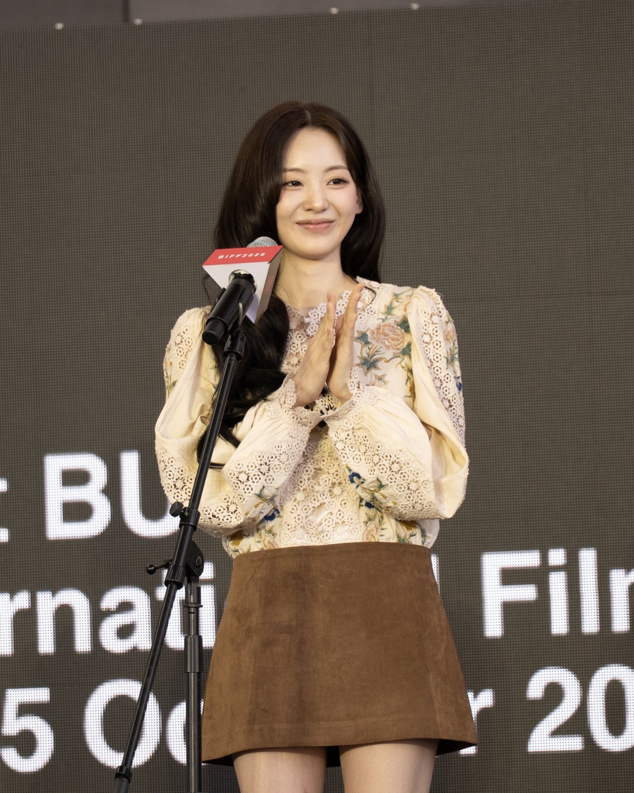
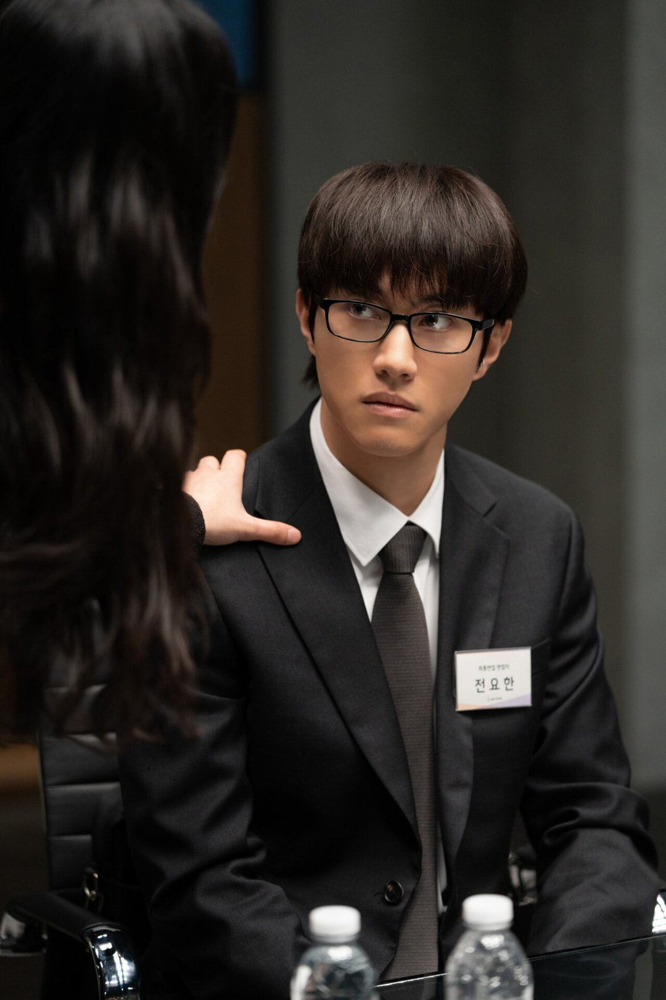
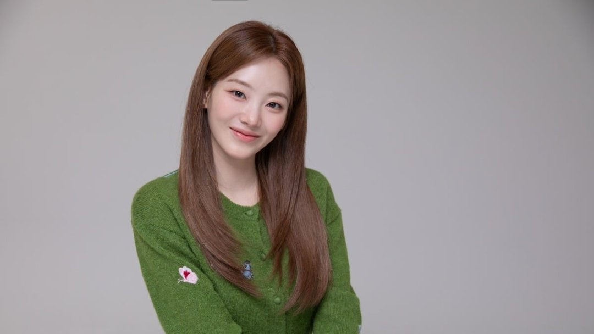

내 비밀이 담긴 봉투를 경쟁자가 들고 있다면, 나는 그 사람의 봉투를 열어 볼까요? 11월 4일 개봉하는 영화 '최종면접'은 이 질문 하나로 굴러가는 이야기예요. 극장에 가기 전에 알아 두면 좋을 세 가지를 정리했어요.
📷 사진 1 자리
▲ 영화 '최종면접' 속 최종면접장 장면 · 사진=NEW 제공
하나, 여섯 명과 이름이 적힌 봉투
무대는 한 회사의 최종면접장이에요. 남은 지원자 여섯 명이 각자의 비밀이 담긴 의문의 봉투를 발견하면서, 함께 면접을 준비하던 사이가 서로를 의심하는 관계로 바뀌어요.
📷 사진 2 자리
▲ '최종면접' 면접 테이블에 앉은 지원자들 · 사진=NEW 제공
조이현이 상황을 차분히 지켜보는 관찰자 문혜인, 김재원이 이상주의자 한진우를 맡았어요. 곽동연은 안경을 쓴 지원자 전요한으로 나오고, 신승호·강유석·배강희가 나머지 자리를 채워요.
📷 사진 3 자리
▲ 사진: FireBirdFilm / CC BY-SA 4.0 / 위키미디어 공용
봉투가 열릴 때마다 관계가 흔들리는 이야기라서, 인물 이름보다 '지금 누구 봉투가 열렸나'를 따라가면 덜 헷갈려요.
둘, 핵심은 면접실 한 방의 심리전
조이현은 여섯 배우의 앙상블이 가장 빛난 장면으로 면접실 심리전을 꼽았어요. 세트가 지어진 뒤 감독, 촬영감독과 배우들이 함께 리허설을 했고, 콘티도 세밀하게 짜여 있었다고 해요.
배우들끼리 "이 장면은 조금 어색한 것 같은데?" 하며 이유를 같이 찾았다는 이야기도 했어요. 자기 캐릭터가 아닌 장면까지 함께 고민했다는 거죠.
조이현이 가장 어려운 캐릭터로 본 건 곽동연의 역할이었어요. 곽동연이 의상 피팅 때 의견을 많이 냈고 안경, 마스크 같은 소품 아이디어도 직접 냈다고 기억했어요. 공식 스틸에서도 전요한은 늘 안경을 쓴 모습이에요.
📷 사진 4 자리
▲ '최종면접'에서 지원자 전요한을 연기한 곽동연 · 사진=NEW 제공
화려한 액션 없이 대사와 표정만으로 긴장을 쌓아야 하는 작품이라, 이 면접실 장면들이 영화의 무게중심이에요.
셋, 미스터리에 키스신이 왜?
의외의 포인트는 문혜인과 한진우 사이의 로맨스예요. 조이현은 "저희 영화가 로맨스 장르는 아니잖아요"라며 뽀뽀를 어느 정도로 해야 할지 수위를 고민했고, 김재원·감독과 이야기하며 만들어 갔다고 밝혔어요. 다른 인터뷰에서도 로맨스가 걱정됐지만 설명을 듣고 납득했다는 취지로 말했죠.
📷 사진 5 자리
▲ '최종면접'에서 문혜인 역을 맡은 조이현 · 사진=NEW 제공
배우도 고민한 대목인 만큼 평가도 갈려요. 개봉 전 나온 한 리뷰는 두 사람의 로맨스가 감정을 쌓는 과정 없이 그려져 뜬금없게 느껴진다고 짚었어요. 미스터리 한가운데 들어온 이 로맨스가 어떻게 읽히는지는 직접 보고 판단할 부분이에요.
짧은 리뷰
'최종면접'은 한정된 공간에서 지원자 여섯 명이 서로의 비밀을 두고 수 싸움을 벌이는 미스터리 영화예요. 취업 경쟁이라는 익숙한 상황에 '폭로 봉투'라는 장치를 얹었어요.
볼거리는 젊은 배우 여섯 명의 앙상블이에요. 봉투가 열릴 때마다 표정이 바뀌는 면접실 장면이 중심이고, 곽동연의 전요한처럼 소품까지 고민한 캐릭터를 찾아보는 재미도 있어요.
한 공간에서 벌어지는 심리전, 마피아 게임 같은 의심의 판을 좋아하는 분께 맞는 영화예요. 다만 정통 추리극의 촘촘함을 기대한다면 로맨스 대목에서 호불호가 갈릴 수 있어요.
✍️ 내 경험 자리 — 직접 보고·듣고 느낀 점 3~5문장으로 바꿔 주세요 (네이버 D.I.A.는 경험이 담긴 글을 우대하고, 경험 없는 글은 검색에서 밀릴 수 있어요)
'최종면접'의 관전 포인트는 봉투가 열리는 순서, 면접실 심리전, 그리고 미스터리 속 로맨스예요. 영화는 11월 4일 극장에서 개봉해요.




